Section 4 Examining the confidence levels
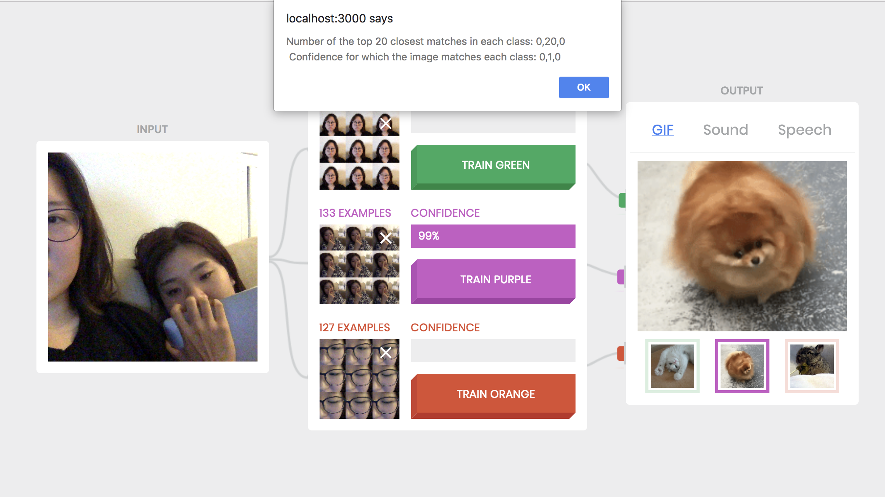As shown in the image above, the alert on the top of the page displays number of images matched and confidence levels for each class.
Note that because my face (one on the left) is only slightly shown, my friend's face (the one on the right) has confidence level of 1 because she has top 20 closest matches.
Section 5 Scaling the confidence values
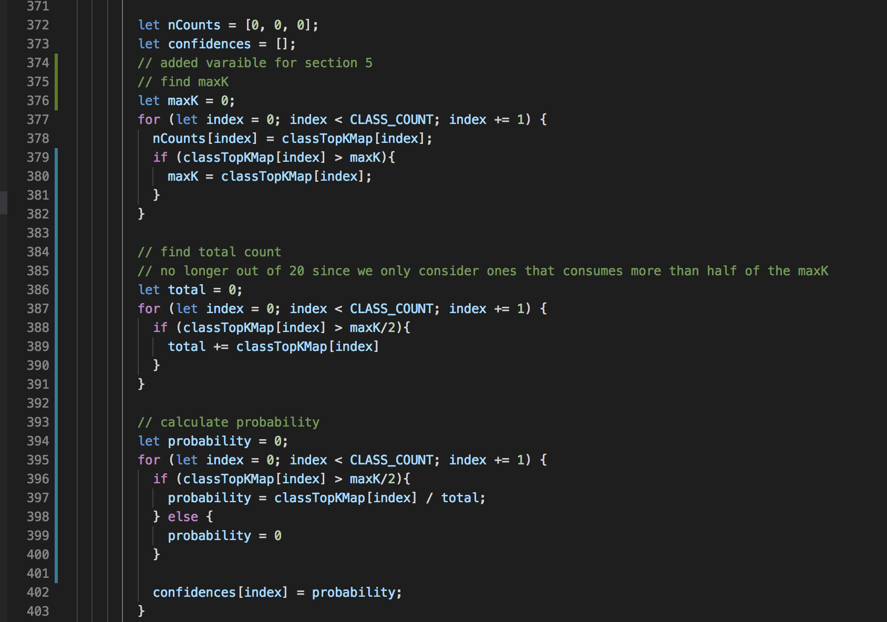Shown above is the code modification made to WebcamClassifier.js
Unlike the original code, the modified code now first finds a class with the most matches (let's call this number of matches "Max Match"). Then in the following iterations, we calculate the probabilities of each classes. If the number of matches is less than half of Max Match, the probability for the given class is 0. Otherwise, the probability is #matches / totalMatches. totalMatches equals to the total number of matches of all classes whose probability is greater than 0.
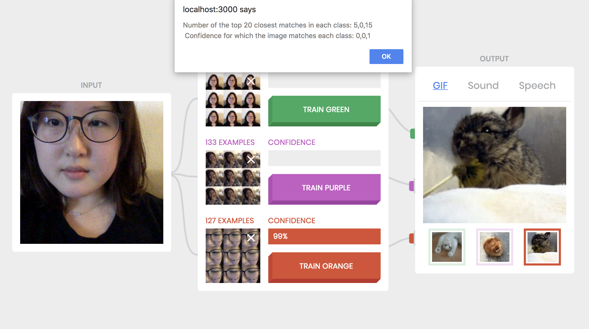 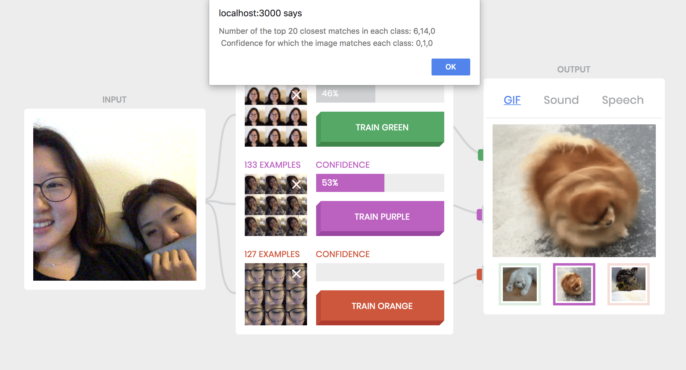In both examples above, not only the classes with 0 match, but also classes with positive number of matches have probablity of 0. For example, in the top image, the first class has 5 matches, the second has 0, and the third has 15. In this case, the Max Match is 15, and both 5 and 0 are less than 7.5, the half of Max Match. Therefore the class with 15 matches has probability of 1, and the other two have probability of 0.
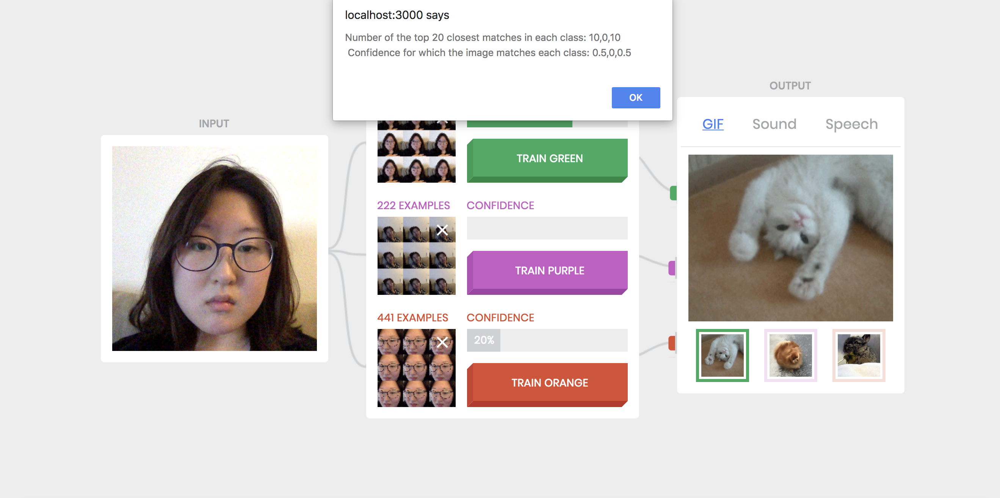 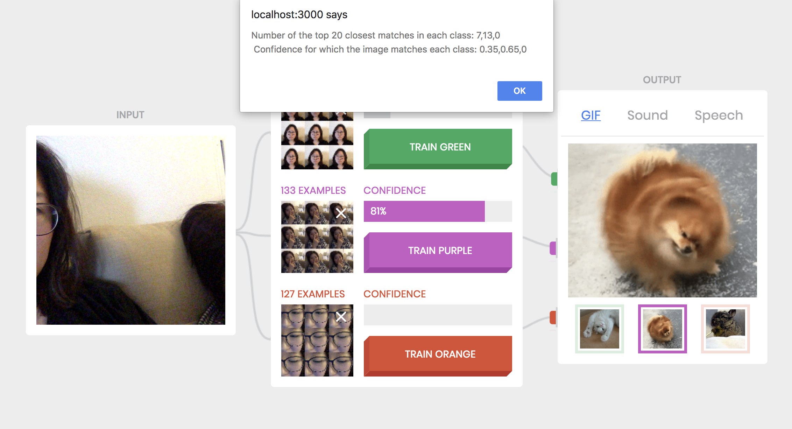In the above two examples, there are two classes with positive probability in each scenario. For example in the bottom image, the Max Matches is 13. Thus, the first class, whose number of matches is 7, should also be factored in, as its number of matches is greater than the half of Max Match (6.5). Therefore the probabilities of the two qualifying classes are proportionally distributed.
Section 6 Limiting the number of training examples per class
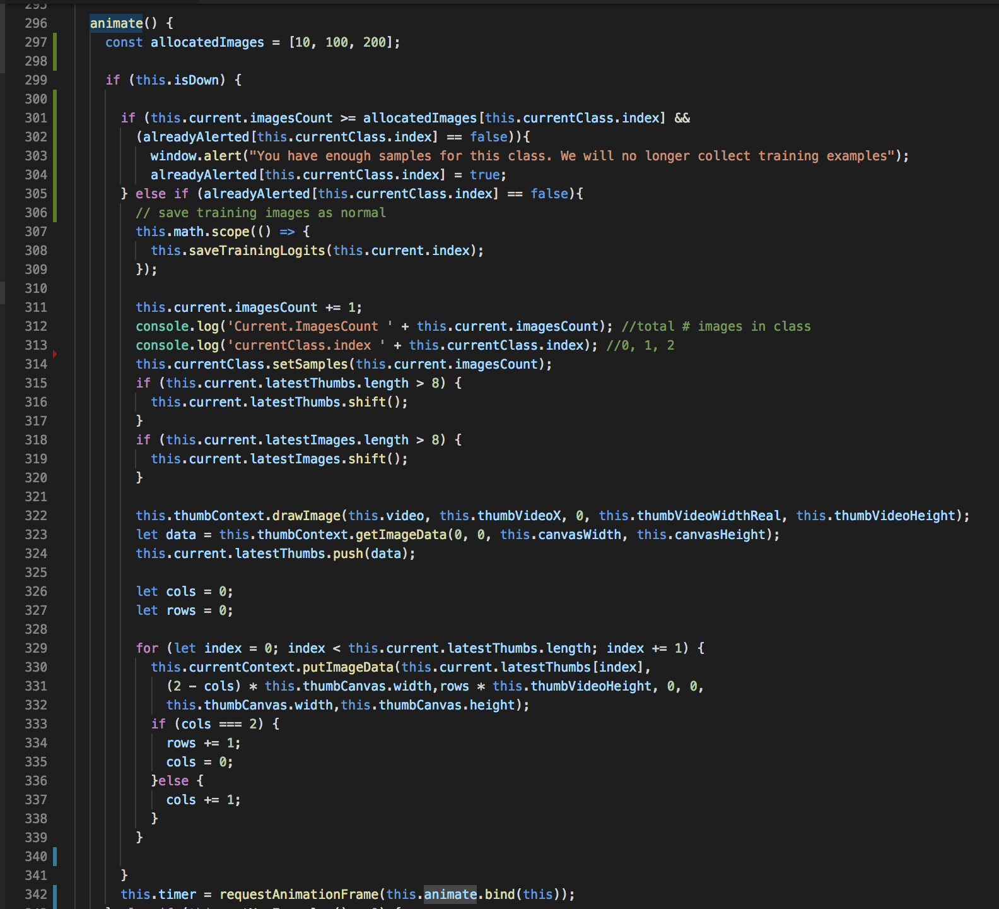Image above demonstrates the code modified for Section 6. As shown in the image, allocated number of samples are 10 for the first class, 100 for the second class, and 200 for the third class.
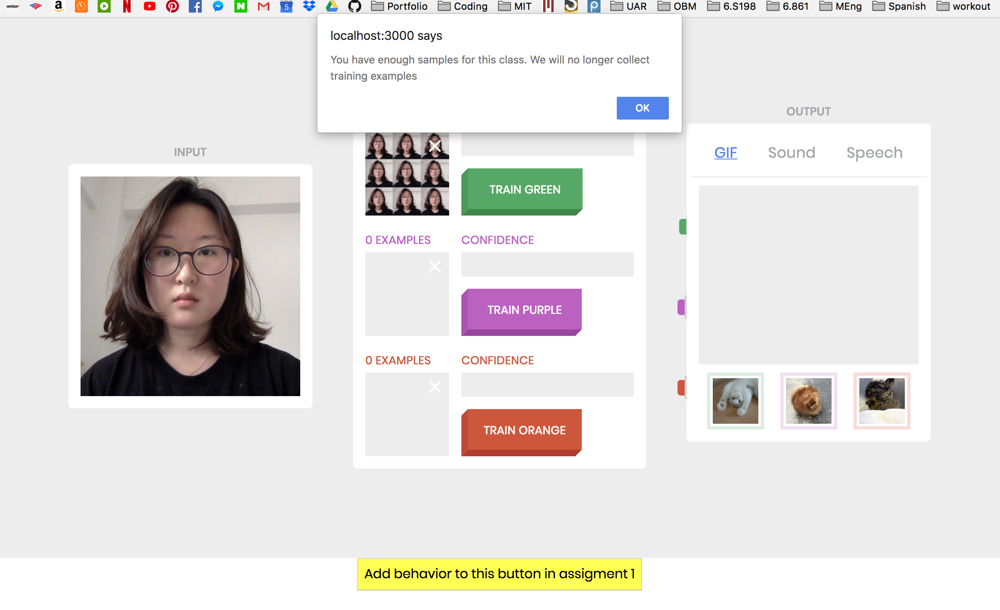As shown in the image, an alert pops up when the maximum number of samples are collected.
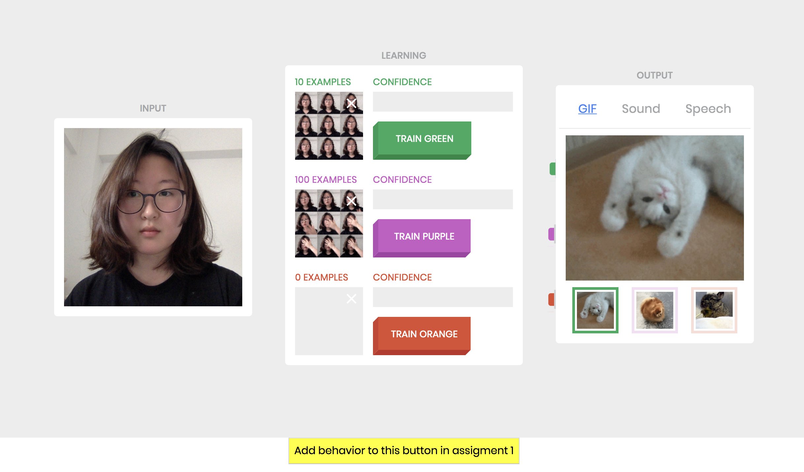Image above verifies that only 10 samples are collected for the first class, and only 100 samples are collected for the second class as specified in the code.
We noticed that when there is a large discrepancy in number of maximum samples for each classes, confidence level for the classes are slightly affected as well. We suspect that this is because number of top matches, which correlates with the probability and confidence level of the classes, significantly decreases if the number of total samples available decreases. I noticed that for classes with small sample size, adding more weight on matches can compensate the decreased confidence level.
Section 7 Further Explorations
For this section, we decreased the number of classes from 3 to 2. The image below shows the code modification for the change.
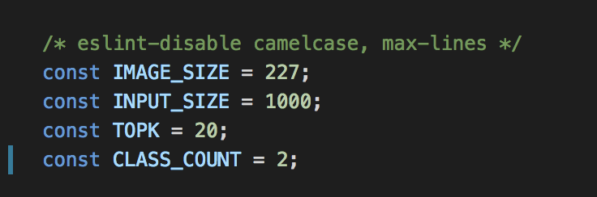With such change, now the confidence level of each classes are modified. In the popup alert, the confidence levels are calculated for only the first two classes as shown below.
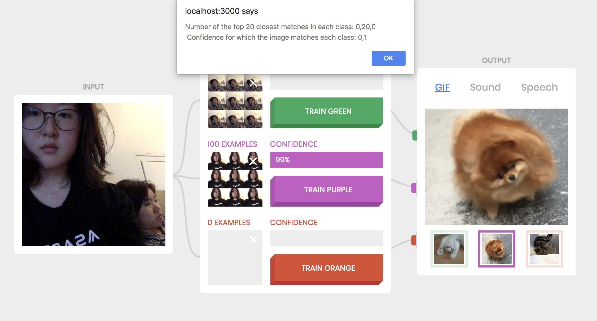